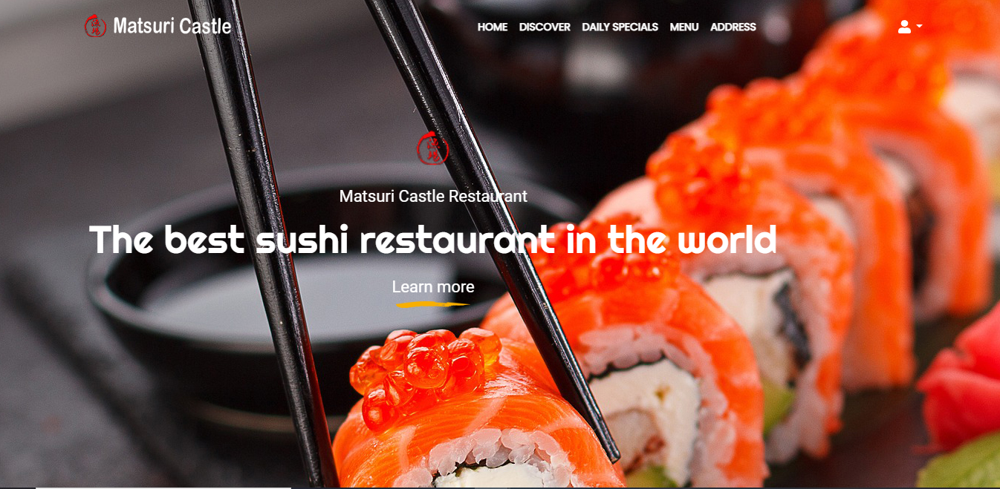
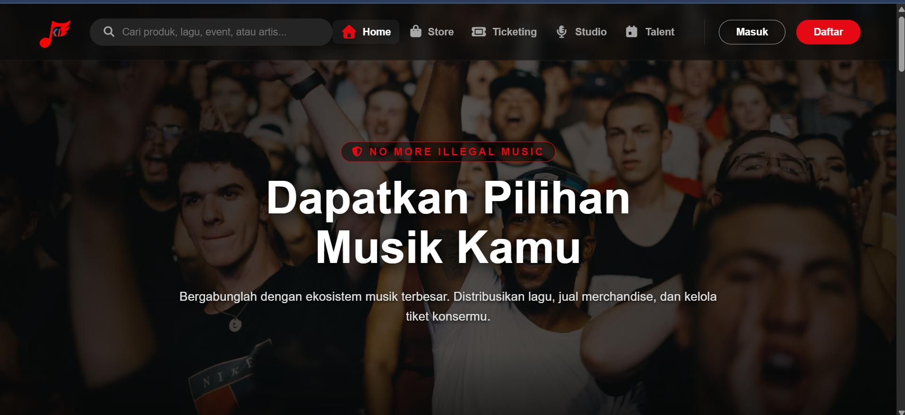

Restaurant Landing Page

/Real Project
An Indonesian music ecosystem bringing music distribution, merchandise, and concert ticketing together.

Karya Indonesia (Karind) presents an Indonesian music ecosystem in one web platform. Its introduction connects music distribution, merchandise, and concert ticketing, while the main navigation also introduces Studio and Talent services.
The public homepage is the starting point for understanding that wider offer. It needs to communicate the platform’s music identity while giving visitors a clear route into the service they need.
A multi-service platform has more than one visitor intent. Someone looking for an event, an artist, or merchandise should not have to interpret the entire ecosystem before choosing where to go.
The interface therefore needs two levels of communication: a concise introduction to Karind as a whole, and distinct entry points for exploring its individual services.
I worked as a full stack programmer, covering frontend and backend development. This case study focuses on the public-facing experience documented in the project preview: the introduction, navigation, search entry point, and account actions.
My typical development range is one to three weeks per project, depending on complexity. The duration above represents that general working range, not a confirmed historical schedule for this release.
The homepage separates its navigation from the main promotional message. Home, Store, Ticketing, Studio, and Talent appear as recognizable destinations, with icons providing an additional visual cue.
A dark foundation keeps the concert photography prominent. Red accents connect the brand mark, selected navigation, registration action, and music-related message, while large white type carries the introduction.
A prominent search field introduces product, song, event, and artist discovery without requiring visitors to select a service first. Separate Masuk and Daftar actions distinguish returning users from new visitors.
The hero explains the relationship between music distribution, merchandise sales, and concert tickets. Together with the service navigation, it presents the breadth of the platform before visitors continue into a particular area.
The homepage brings Karind’s music identity and service entry points into a single public introduction. It communicates a connected platform rather than presenting each service as an unrelated destination.
Search, service navigation, and account access are visible together, allowing the introduction and the next available actions to be read in the same place.
Let’s turn your next idea into a clear digital experience. Tell me what you’re working on, and we can take it from there.
Contact Me